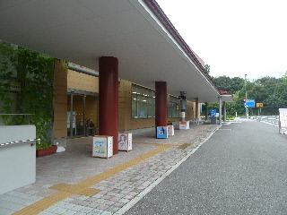
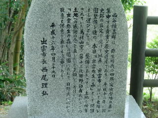
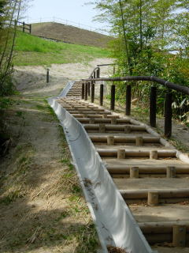
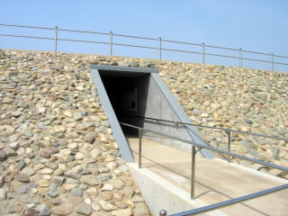
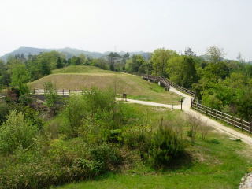

出雲弥生の森博物館のサマーナイトミュージアム
2014/08/16
弥生の森博物館の前に、灯篭が出されていました。
今日はイベントがあるみたい。

サマーナイトミュージアムで、バックヤードツアーがあるそうです。
雨が降らないといいですね。
今日、出雲市は出雲神話まつりもあるそうです。 どちらも天気が気になりますね。
島根県出雲市大津町2760番地
2014/08/16
弥生の森博物館の前に、灯篭が出されていました。
今日はイベントがあるみたい。

サマーナイトミュージアムで、バックヤードツアーがあるそうです。
雨が降らないといいですね。
今日、出雲市は出雲神話まつりもあるそうです。 どちらも天気が気になりますね。
2010/05/05
4/29にオープンしたばっかりの出雲弥生の森博物館に行きました。 無料の施設ですが２階建てで広かったです。
弥生の森博物館の道路をはさんだ反対側には西谷墳墓史跡公園があるので、見て回るエリアが広かったです。

公園のへじっこの方に前市長の名前を見つけました。なにか造るとこうやって名前が残るんですね。

出来てまもないので新しくて綺麗な道ですね。 ぐるっと回ると登ったり下ったりで、結構な運動になります。

古墳の中にも展示物が置いてありました。博物館だけじゃなく、公園も見て下さいな感じです。

緑も多くあるので、「お墓」っていうのが気にならない人には散歩にいいかもしれません。
あと山なので、虫が少ない時期がいいかも？って思いました。